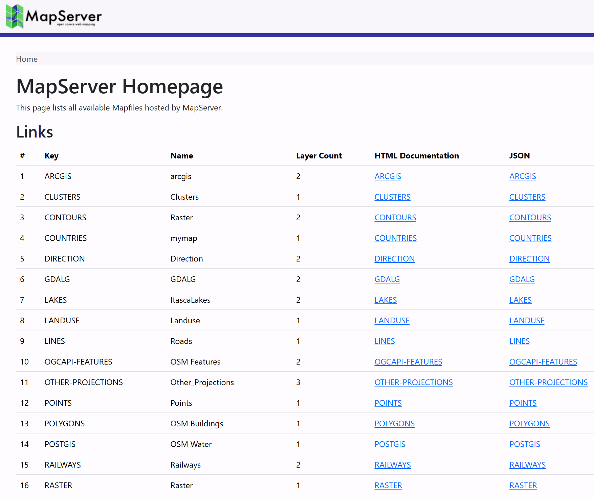

MapServer Configuration File
MapServer 8.0 introduced support for a global CONFIG file. This allows settings to be defined once and applied to all Mapfiles in a MapServer deployment, reducing duplication and simplifying configuration.
This tutorial provides an introduction to the CONFIG file, and highlights the Index Page
functionality that it enables.

Overview
The configuration file used for the workshop can be found at workshop/exercises/mapfiles/mapserver.conf.
It uses a structure similar to a Mapfile, with configuration organized into blocks that are terminated with END.
CONFIG
ENV
...
END
MAPS
...
END
PLUGINS
# not currently used in the workshop, this block can be used
# to add plugins for Oracle and Microsoft SQL Server drivers
...
END
END
Important
If you make changes in the CONFIG file you need to restart the web server.
The configuration file is read only when the web server (Apache in this workshop) starts.
The easiest way to do this in the workshop is to restart the mapserver container:
ENV Settings
The ENV (Environment) block is used to store
Environment Variables used by MapServer.
Placing them in the configuration file means they do not have to be duplicated in every Mapfile.
Settings defined in the configuration file can be overridden by settings in individual Mapfiles.
When both are present, the Mapfile value takes precedence.
In the workshop configuration file, the following variables are set:
MS_ONLINERESOURCE ""theONLINERESOURCEis used by various services, such as WMS, and WFS, to generate links, for example inGetCapabilitiesrequests. An option to set this globally in theCONFIGfile was added in MapServer 8.8 (see RFC 141) to avoid having to setows_onlineresourcefor different servers (for example in development and production) in every Mapfile. In this workshop it is set to an empty string, allowing MapServer to automatically generate URLs based on the incoming request host and path.OGCAPI_HTML_TEMPLATE_DIRECTORY "/usr/local/share/mapserver/ogcapi/templates/html-bootstrap/"this setting points MapServer to the folder containing the Bootstrap HTML templates used when generating the OGC API interface, for example at http://localhost:7000/timisoara/ogcapi/?f=html.MS_INDEX_TEMPLATE_DIRECTORY "/usr/local/share/mapserver/ogcapi/templates/html-index-bootstrap/"a similar setting, but used to point to the Bootstrap templates used when generating the MapServer Index Pages.MS_MAP_PATTERN "^/etc/mapserver/"- This is a required setting used to restrict Mapfiles to specific filesystem locations. This prevents users from requesting arbitrary Mapfiles, reducing the risk of unauthorised data access. In the workshop Mapfiles are restricted to/etc/mapserverand subdirectories.
Tip
There are several other settings commented out in the configuration file, to show the different environment variables available.
These can be set globally in the CONFIG file, and then overridden in individual Mapfiles,
using the syntax CONFIG "VARIABLE_NAME" "VARIABLE_VALUE", for example CONFIG "MS_ERRORFILE" "stderr".
MAPS Settings
The MAPS block contains a list of all Mapfiles available on the server, in the form of
key "path":
MAPS
# the paths used here, are the paths
# within the MapServer Docker container
CLUSTERS "/etc/mapserver/clusters.map"
CONTOURS "/etc/mapserver/contours.map"
# additional mapfiles...
END
The keys allow us to access the Mapfile using the URL in the form http://server/KEY/.
Note
Mapfiles explicitly registered in the MAPS section are considered trusted and are not
subject to MS_MAP_PATTERN validation because they are defined server-side rather than
provided by client requests.
MS_MAP_PATTERN is only applied when a Mapfile path is supplied by a client
request, for example:
?map=/etc/mapserver/lines.map
If we have set the MS_INDEX_TEMPLATE_DIRECTORY path in the ENV section above, then MapServer
will return an "Index Page", listing all these maps at the root of the MapServer URL: http://localhost:7000/.
Clicking on one of these links takes you to an individual Mapfile Landing Page, which lists the services available for that Mapfile, such as WMS, WFS, WCS, and OGC APIs. For example http://localhost:7000/timisoara/.
Code
Example
- MapServer Index Page request: http://localhost:7000/
- MapServer Mapfile Landing Page example: http://localhost:7000/timisoara/
mapserver.conf
#
# MapServer Config File
# (used by the workshop)
#
CONFIG
#
# Environment variables (see https://mapserver.org/environment_variables.html)
#
ENV
MS_ONLINERESOURCE ""
#
# OGC API
#
OGCAPI_HTML_TEMPLATE_DIRECTORY "/usr/local/share/mapserver/ogcapi/templates/html-bootstrap/"
#
# Landing page
#
MS_INDEX_TEMPLATE_DIRECTORY "/usr/local/share/mapserver/ogcapi/templates/html-index-bootstrap/"
#
# Limit Mapfile Access
# required - Mapfiles can only be loaded if they match this regex
MS_MAP_PATTERN "^/etc/mapserver/"
# MS_MAP_NO_PATH "1"
# MS_MAP_PATTERN "^/opt/mapserver"
#
# Global Log/Debug Setup
#
# MS_DEBUGLEVEL "5"
# MS_ERRORFILE "/opt/mapserver/logs/mapserver.log"
#
# Default Map
#
# MS_MAPFILE "/opt/mapserver/test/test.map"
#
# Proj (path to proj.db)
#
# PROJ_DATA ""
#
# Request Control
#
# disable POST requests (allowed by default, any value will do)
# MS_NO_POST "1"
#
# Other Options
#
# MS_ENCRYPTION_KEY
# MS_USE_GLOBAL_FT_CACHE
# MS_PDF_CREATION_DATE
# MS_MAPFILE_PATTERN "\.map$"
# MS_XMLMAPFILE_XSLT
# MS_MODE
# MS_OPENLAYERS_JS_URL
# MS_TEMPPATH "/etc/mapserver/tmp"
# MS_MAX_OPEN_FILES
END
#
# Map Aliases
#
MAPS
ARCGIS "/etc/mapserver/arcgis.map"
CLUSTERS "/etc/mapserver/clusters.map"
CONTOURS "/etc/mapserver/contours.map"
COUNTRIES "/etc/mapserver/countries.map"
DIRECTION "/etc/mapserver/direction.map"
GDALG "/etc/mapserver/gdalg.map"
LAKES "/etc/mapserver/lakes.map"
LANDUSE "/etc/mapserver/landuse.map"
LINES "/etc/mapserver/lines.map"
OGCAPI-FEATURES "/etc/mapserver/ogcapi-features.map"
OTHER-PROJECTIONS "/etc/mapserver/other-projections.map"
POINTS "/etc/mapserver/points.map"
POLYGONS "/etc/mapserver/polygons.map"
POSTGIS "/etc/mapserver/postgis.map"
RAILWAYS "/etc/mapserver/railways.map"
RASTER "/etc/mapserver/raster.map"
RASTER-PIPELINE "/etc/mapserver/raster-pipeline.map"
SLD "/etc/mapserver/sld.map"
STAC "/etc/mapserver/stac.map"
STARS "/etc/mapserver/stars.map"
TILES "/etc/mapserver/tiles.map"
TIMISOARA "/etc/mapserver/timisoara.map"
VECTOR-TILES "/etc/mapserver/vector-tiles.map"
WCS "/etc/mapserver/wcs.map"
WFS "/etc/mapserver/wfs.map"
# Example for ./workshop/content/docs/mapfile/config.md
# CONFIG_MAP "/etc/mapserver/config.map"
END
END
config.map
MAP
NAME "CONFIG_MAP"
SIZE 800 400
PROJECTION
"epsg:4326"
END
IMAGECOLOR "#37929E"
WEB
IMAGEPATH "/etc/mapserver/tmp/"
METADATA
#"ms_enable_modes" "!*" # !* disables all CGI requests
# "wms_enable_request" "*"
# "wcs_enable_request" "*"
# "wfs_enable_request" "*"
# "ows_enable_request" "*"
END
END
EXTENT -180 -90 180 90
LAYER
NAME "countries"
TYPE POLYGON
STATUS DEFAULT
CONNECTIONTYPE FLATGEOBUF
DATA "data/naturalearth/ne_110m_admin_0_countries.fgb"
CLASS
STYLE
COLOR "#C7CAB0"
OUTLINECOLOR 255 255 255
WIDTH 0.1
END
END
END
END
Exercises
- Add the Mapfile
./workshop/exercises/mapfiles/config.mapto the configuration file./workshop/exercises/mapfiles/mapserver.conf. Check it appears in the MapServer Index page at http://localhost:7000/. You will need to restart the MapServer container to see this change. - Enable the CGI functionality in the Mapfile by changing
"ms_enable_modes" "!*"to"*"(or comment-out the whole line). This should create a new "OpenLayers Viewer" link at http://localhost:7000/CONFIG_MAP/. - Comment and uncomment the various
enable_requestMETADATAitems, and see how they affect the available services for the Mapfile at http://localhost:7000/CONFIG_MAP/.
Tip
When editing a Mapfile, changes are instantly reflected in the HTML Index Pages
(when you refresh the browser). You only need to restart the MapServer Docker container
if you edit the mapserver.conf file, as this is read once when the Apache web server
starts.